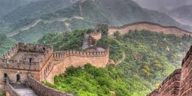
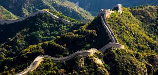
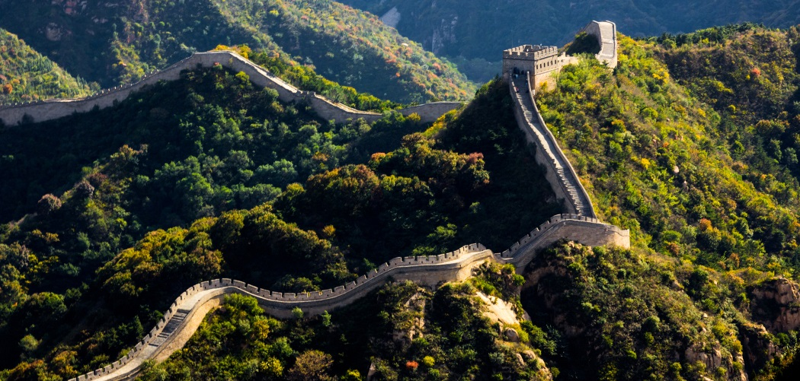
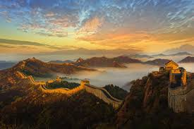

La Grande Muraille de Chine est la plus grande structure humaine jamais construite dans le monde entier et s’étend sur 5 000 km de l’est à l’ouest. Si vous voulez la visiter, vous devez apprendre les méandres de la Grande Muraille sur les sommets des montagnes du nord de la Chine. Dès que vous y accédez, vous êtes sur les sommets de certaines montagnes célèbres ou inconnues. Vous découvrirez le monde d’en bas et aurez même une vue panoramique de la zone où vous vous trouvez. La vue est en effet spectaculaire !

La Grande Muraille de Chine fut construite non pas dans une dynastie, mais dans beaucoup de dynasties de la Chine ancienne. Ainsi, elle est étroitement liée à l’histoire chinoise. Par exemple, elle était déjà présente durant les périodes des Printemps et Automnes et des Royaumes Combattants de Chine (770-221 av. J.-C.).
Quand le premier empereur de l’empire Qin devint le seul souverain de la Chine, il ordonna au peuple de construire la Grande Muraille pour empêcher les envahisseurs venant du nord. Cependant, les sections de la muraille que nous voyons aujourd'hui ont été pour la plupart construites durant la dynastie Ming (1368-1683). Pendant ces périodes, les soldats de la Chine et les envahisseurs du Nord ont eu de nombreux combats, sanglants, heureux ou tristes et des histoires intéressantes qui attendent que vous les exploriez.

Dans une certaine mesure, escalader la montagne et visiter la Grande Muraille peut vous offrir la même expérience que de garder votre corps en forme, car les deux activités sont toutes associées aux montagnes. La différence est l’escalade de la montagne, vous n’avez pas à atteindre les sommets des montagnes, mais vous devrez, si vous voulez marcher sur la Grande Muraille car elle est construite sur les sommets des montagnes. Parfois il faut tellement d’énergie pour couvrir une petite distance parce que certaines sections sont très raides, environ de 80 à 90 degrés. Les sections les plus importants de la Grande Muraille à Pékin incluent Badaling, Mutianyu, Simatai, Juyongguan et Jiankou.

Prendre des photos maintenant semble assez fréquent, mais prendre des photos sur le dessus de la Grande Muraille est encore plus impressionnant. Si vous prenez des photos sur la montagne, vous ne pouvez avoir des images de beaux arbres, de fleurs, un ciel bleu, des ruisseaux clairs et de magnifiques sommets, mais vous aurez une vue plus envoûtante de la Grande Muraille, ce qui est une image contrastée de la montagne et des anciennes briques qui forment un gigantesque dragon bleu qui s’étend entre les sommets de montagne. En outre, cela vous donnera l’impression de remonter dans le passé de la Chine.
